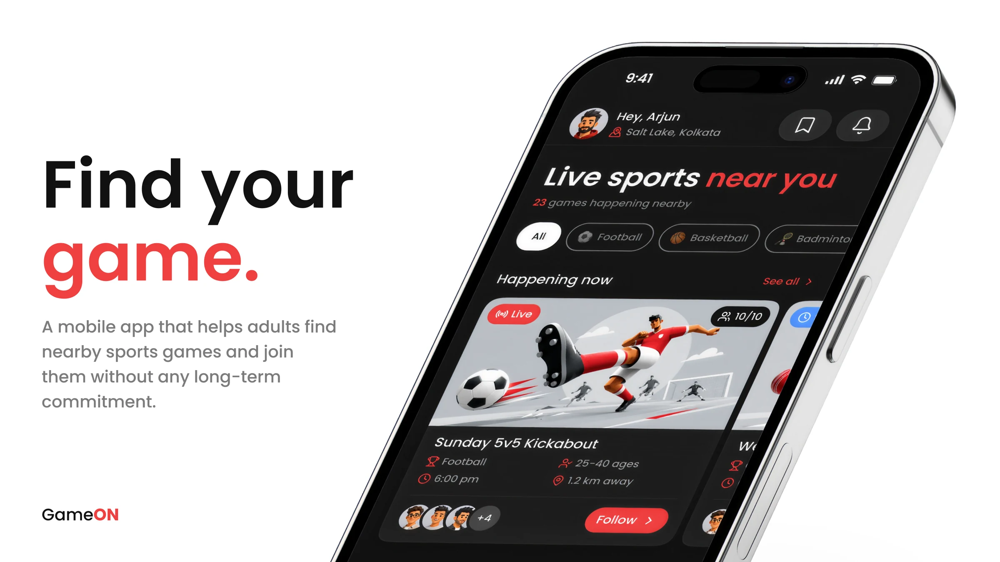
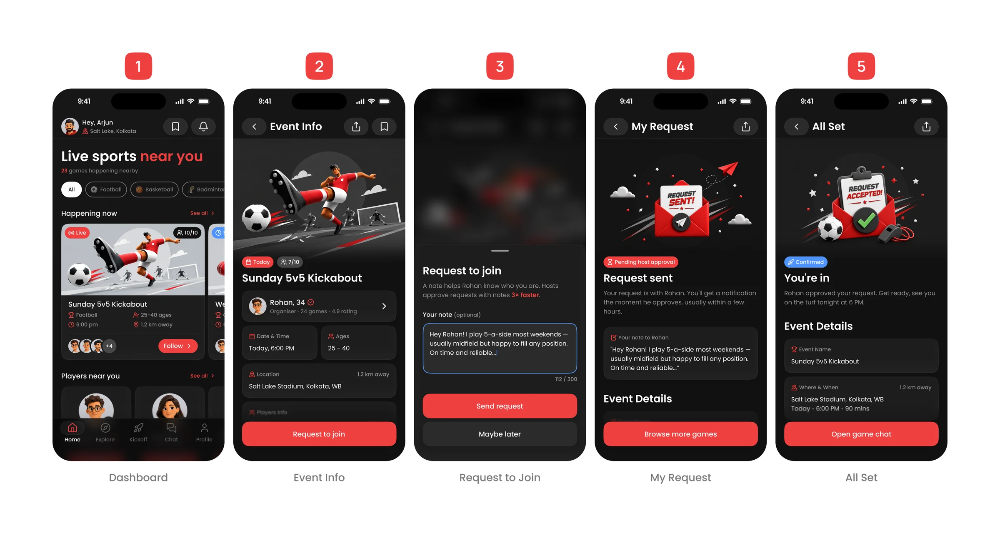
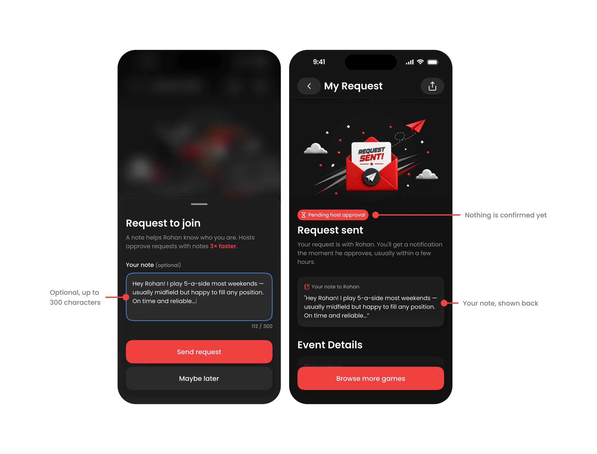
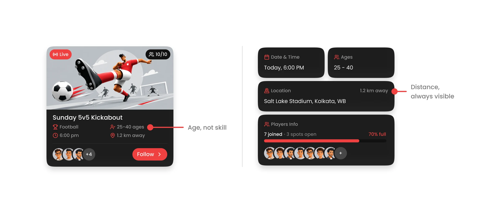
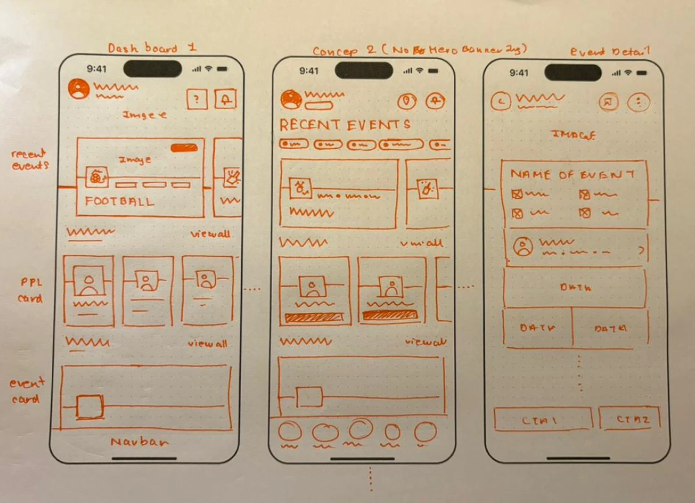
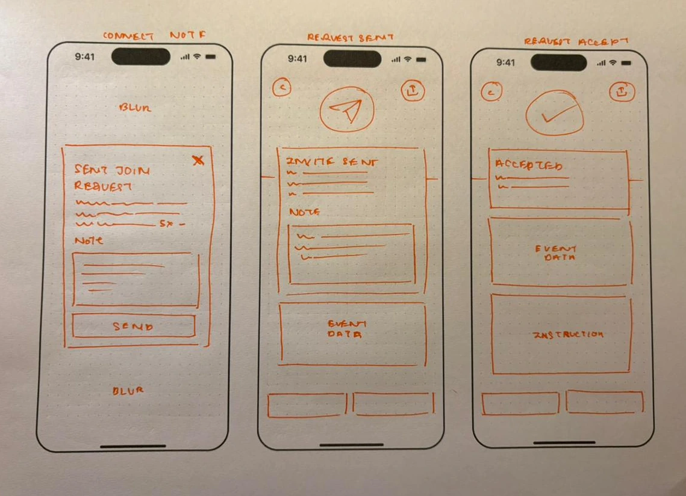
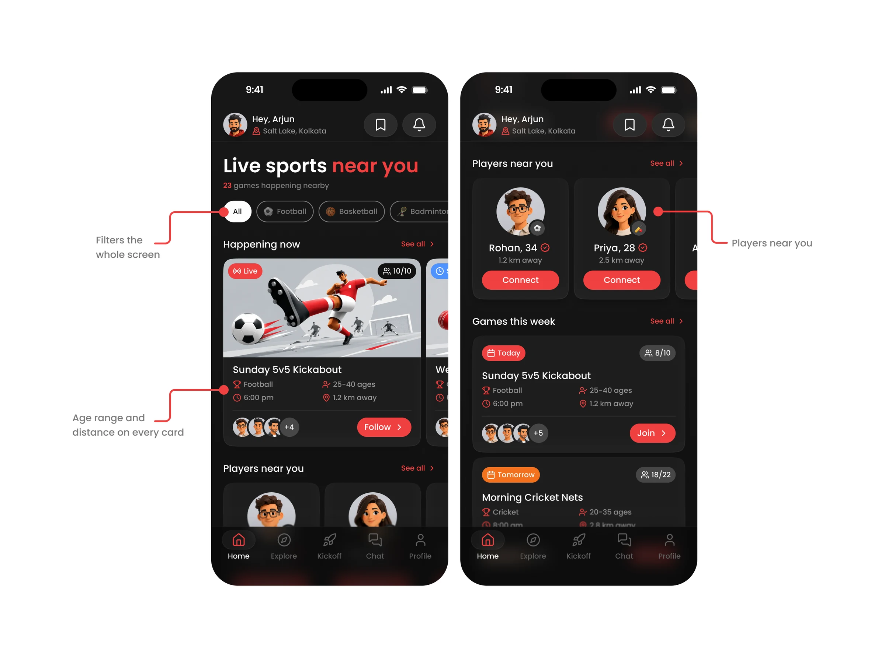
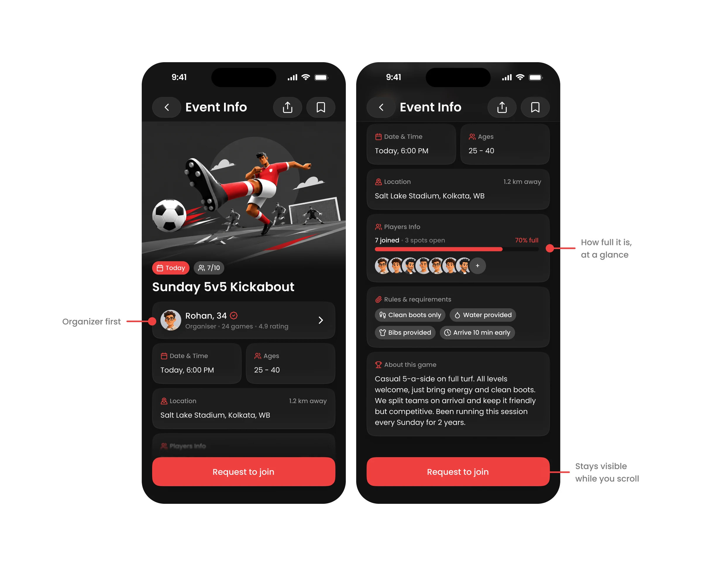
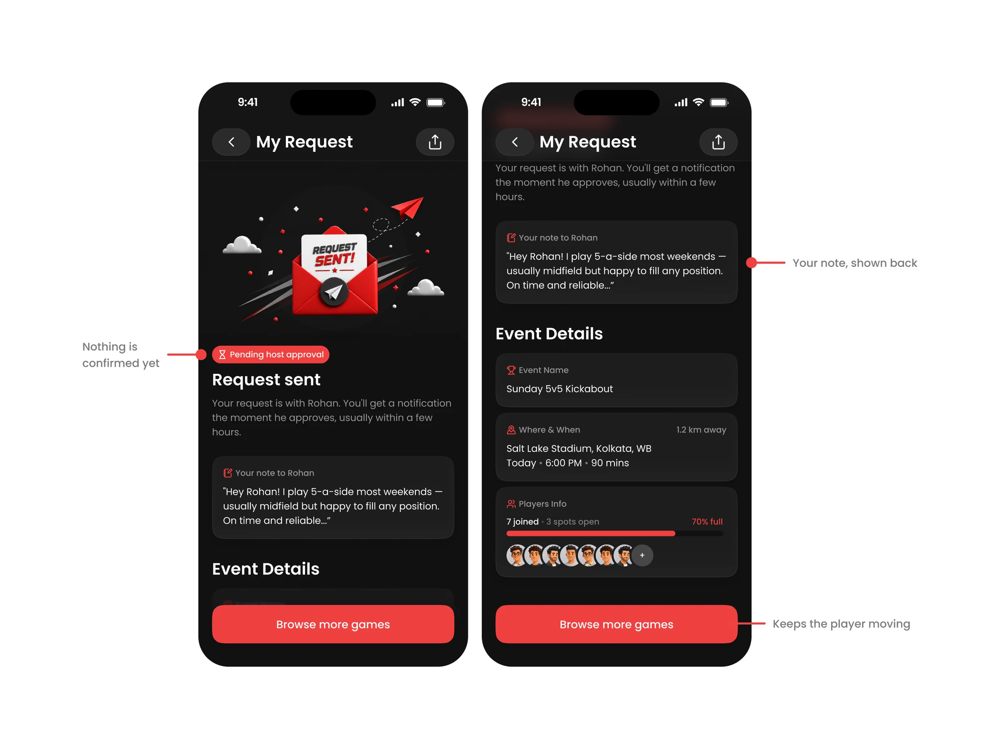
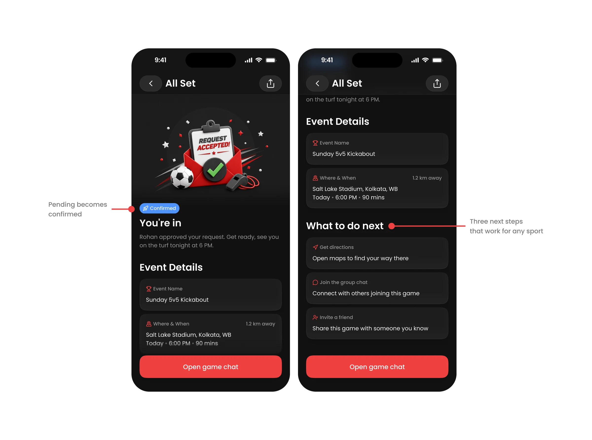

Age over skill
People want to play with someone in the same phase of life, not only the same skill bracket. It became the age range on every game card.
You decide to play again, and nobody you used to play with is free. A club would fix that, but it asks for a long-term commitment. I designed the opposite: one flow, five screens, from “what’s near me?” to “you’re in”, and the hardest part of it is not finding a game. It is asking a stranger to let you in.

A mobile product concept, never launched, made for a design brief that asked for one flow, the directions I explored, my assumptions and the metrics it might move. Nothing here was user tested: the project file records no interviews or usability tests, so every assumption and metric below is labelled as an assumption or a hypothesis.
Solo designer, from the desk research through the paper wireframes to the final dark-mode screens and a prototype video. Scope was one happy-path flow, chosen on purpose over a shallow pass at every state.
Schedules fill up, people relocate, and the friends you used to play with scatter. Clubs and classes offer a way back in, but they ask for a long-term commitment that not everyone can make. So someone who just wants a game on Sunday has nobody to ask.
“Help adults find someone to play with, nearby, without any long-term commitment.”
I looked through community platforms, Reddit threads and online discussions about recreational sports. This was desk research, not interviews, so the three themes below are informed starting points, not validated findings. Each one went straight into a screen.
People want to play with someone in the same phase of life, not only the same skill bracket. It became the age range on every game card.
A great game 15 km away on a Sunday morning is not practical. Distance stays visible from the dashboard to the confirmation.
People are open to new players but uneasy about who shows up, and hosts feel the same. It became the request note and the verified badge.
Full verification, by photo or identity, was out of scope. The verified badge signals that a trust layer exists without designing it, so trust in this concept rests on the organiser card and the note, not on verification.
The player is someone who has not played in a while, is new to the app, and does not know the host. The table follows that one player. The middle column is the question I assumed they have at each step, which is my design intent and not research. The right column is the call I made to answer it.

| Screen | What the player is trying to work out | The call I made |
|---|---|---|
| 1. Dashboard | Is anything happening near me, and is it for someone like me? | Sport chips filter the whole screen. Every card carries age range and distance, so the answer is on the card, not behind a tap (decision 4). |
| 2. Event Info | Who is this host, and what am I walking into? | The organiser card comes before date, time and place. A fill bar and rule chips follow, so the commitment is clear before the request (decision 3). |
| 3. Request to Join | How do I ask a stranger without it feeling cold? | A bottom sheet over the blurred event, with an optional note. Writing nothing is allowed (decision 2). |
| 4. My Request | Did it go through, and what did they actually see? | The sent note is echoed back, a Pending chip says nothing is confirmed, and Browse more games keeps the player moving. |
| 5. All Set | Am I in, and what do I do now? | A Confirmed chip, where and when in one block, then three next steps that work for any sport: directions, group chat, invite a friend. |
Four ways to answer the same brief were on the table, and three of them made the player do work before they could play. Court booking was the brief's own example flow, and I still set it aside.
| Direction | What it is | Why it was or was not pursued |
|---|---|---|
| Create a Game | The user sets up a session, picks a sport, time and place, then waits for others. | Too much upfront effort for someone who just wants to play, not plan and organise. |
| Browse and Join (chosen) | See what is nearby, pick a game, request to join. | Lowest friction, and it works for every sport. |
| Sports Feed | A scrollable feed of nearby sports activity, like Instagram for local games. | Too passive. Browsing posts does not get you into a game. |
| Court Booking | Book a venue first, then find players to fill the slots. | It puts venue booking and payments before people, so it solves the wrong problem first. |
The trade-off is real: Browse and Join gives up everything a host would want, such as creating and managing a session, and it only works if games already exist nearby. I accepted both for one reason. It asks nothing of a player who just opened the app. The security worry went into the request itself, through the note (decision 2).
Nothing was tested with players, so this is a judgement about friction, not a measured result.

Joining means asking a host to say yes to a stranger. My first idea was to remove that question: auto-accept anyone verified. I dropped it, because it takes the organiser out of a decision that belongs to them, and a verified user can still be the wrong fit for a specific game.
That left the host deciding on a faceless request. So I borrowed LinkedIn's connect with a note: up to 300 characters, so a request arrives as an introduction. The host reads it, and can open the requester's profile, games played and rating, before accepting.
I considered making the note mandatory and rejected it. A required field costs the most at the moment someone is deciding, which is the drop-off point I least wanted to touch. So the sheet nudges, and Maybe later sits under the primary button as plain text with no visual weight.
The sheet's copy says hosts approve requests with notes 3x faster. That number is a claim written into the concept. I did not measure it, and it would need real data before it belonged in a product. The working mockups show the copy getting there: an early version said only that hosts approve faster with a friendly intro.
After sending, the player waits, which is where a note could feel like it vanished. The pending screen echoes it back, so the player sees exactly what the host received. A Pending host approval chip says nothing is confirmed yet, and Browse more games stops the wait from being a dead end.
What is still unknown is whether hosts read the notes at all, and whether a note raises approval or only adds writing for the player. That is the first thing I would test.
The research said people are uneasy about who shows up. The alternative was to lead with when and where, the facts needed to decide. I reversed that: if the host does not feel trustworthy, the time and place do not matter, so the player reads the person first.
It also answered the stranger concern inside the flow, without adding a step. The cost is that the practical facts sit one card lower, and the verified badge only signals trust, because real verification was out of scope. I did not test whether players read the card in this order.

Matching by skill level was the alternative, and the research pointed somewhere else: people want to play with someone in the same phase of life. Skill cannot be verified. Age can. So each card answers the question people actually ask, is this my kind of crowd?
Distance sits beside it, because a great game 15 km away on a Sunday morning is not practical. The host sets the age range and players cannot change it, which keeps the crowd the host intended.
The trade-off is exclusion. An age range can shut out someone who would have fit the game perfectly, and a mixed-skill game has no skill signal at all. Both rest on desk research, not on players, so they stay assumptions.
The working HTML mockups from 23 June show a version of the flow with money in it: a rupee-per-head price on the game cards, a cost badge, a price on the Request to join button and a payment reminder on the confirmation. The submitted screens have none of it.
My reasoning, from the project file: casual sports in India are social, not transactional, so cost was removed from the whole UI. If there is a ground fee to split, that happens in the group chat after confirmation.
What I gave up is clarity. A player may want to know what a game costs before asking to join, and pushing the fee into the chat moves an awkward conversation to after the commitment. I made the call to keep the request about people, not payment, and I did not test it. It is the assumption I would be least surprised to see fail.
| Decision | Reasoning |
|---|---|
| The button follows the state of the game | A game can be live, upcoming with spots, or upcoming and full, so the button is Follow, Join or Notify Me. A full game still gives the player something to do, and today's full game can be tomorrow's live one to follow. Notify Me is described in the project file but not drawn in the five final screens. |
| Player cards borrow familiar patterns | A horizontal strip like Instagram's suggested profiles, name and age on one line (Rohan, 34) as dating apps do, and a sport badge on the avatar instead of extra text. |
Everything was sketched on paper before I opened Figma. Two sheets cover the whole flow, and the first one is where the dashboard was still undecided: one concept with a hero banner, one without it and with filter chips instead. The submitted dashboard uses the chips.

Sheet 1: Dashboard 1 with a hero banner, Concept 2 without it and with filter chips, and an early Event Detail.

Sheet 2: the request flow, from the note sheet to Request Sent and Request Accept.
The note sheet, the echoed note on Request Sent and the accepted screen are all already on sheet 2, so the core layout of the request flow was settled on paper. Figma adjusted it, it did not redesign it.
Between the sketches and the submitted screens there are three working HTML mockups of the flow and a colour reference. These are the iterations I can show from files that exist today. Their file dates are 23 June 2026, and I treat the order as Mockup 1 to 3.
| Version | What it contained | What changed from the version before |
|---|---|---|
| Mockup 1 | A dark, near-black base. The player flow, plus a host screen listing join requests with Approve and Decline. Two live cards on the dashboard. | First version. The note prompt said only that a friendly intro helps hosts approve faster. |
| Mockup 2 | A warmer dark gray base. The player flow from dashboard to approved, with one live card and one starting soon. The host screen is gone. | The live card stays red and the second card turns blue. The note prompt gains the 3x faster claim, and the pending state is explained as honest: orange means waiting, not success. |
| Mockup 3 | The most detailed version: organiser stats, a fill bar, rules, age range and a price per head on cards, and a payment reminder on the confirmation. | Cards become information-dense. It is the latest of the three, and the one that shows cost. |
| Submitted screens | Five screens, player side only, with no cost and no host screen. | Red marks Pending and blue marks Confirmed. Cost and the host view are gone. |
The colour reference written during these rounds assigns roles: red for action and urgency, blue for information, orange for pending and cost, green for confirmation only after the host approves. The submitted screens do not follow it everywhere. Pending is red, Confirmed is blue and orange appears on the Tomorrow badge. I show both rather than pretend the system survived unchanged.
The journey above shows the order. These are the calls inside each screen, at the top and scrolled.
| Element | The call |
|---|---|
| Sport filter chips | They filter the whole screen and the heading updates to match, so the page always says what it is showing. |
| One card pattern, used twice | Happening Now and Games This Week share the same card, horizontal and vertical. Age range, time and distance are always in the same place. |

| Element | The call |
|---|---|
| Hero illustration | It communicates the sport before any text is read. |
| Players fill bar | 7 joined, 3 spots open, 70% full. It signals urgency without extra copy. |
| Rules chips and About | They set expectations up front: clean boots, water and bibs provided, arrive 10 minutes early. |
| Request to join | A sticky CTA that stays visible while the player scrolls. |

This screen is shown in decision 02, with the note echoed back on the next screen.
| Element | The call |
|---|---|
| Bottom sheet over a blurred event | The player never leaves the context they are deciding about. |
| Blue focus border on the note | The focused field stays distinct from the red CTAs, so blue means input and red means action. |
| Element | The call |
|---|---|
| Pending chip | Red while the request awaits approval, so it is clear that nothing is confirmed yet. |
| Event details stay below | Context is not lost while the player waits. |
| Declined state | Not drawn. This screen covers the pending state only, and the declined state is a known gap. |

| Element | The call |
|---|---|
| Confirmed chip | It turns blue once the host approves, so the change from pending to confirmed needs no extra copy. |
| Three generic next steps | Get directions, Join the group chat and Invite a friend work for any sport, so the cards are reusable across every game type. |

These are design assumptions, not validated findings. The project file does not include user testing that confirms them.
| Assumption | What follows from it |
|---|---|
| No payments in the flow | Cost is removed from the whole UI. A fee to split is settled in the group chat (decision 5). |
| Location access is granted | Every near-you feature depends on location permission being on. |
| People play near where they live or work | Users want games within a short distance, which is why distance is on every card. |
| The host sets the age range | Players cannot change it, which protects the social fit of each session (decision 4). |
The documented flow is the primary happy path only: find a game, send a request, get confirmed. Declined requests, status indicators on cards for games already applied to, empty states when no games are nearby, and the host's side of the request were outside it. I chose one complete, coherent flow over a shallow pass at every state.
GameON was never launched and nothing below was measured. These are hypotheses I would want to test, each tied to a decision above.
| Potential metric | Why the design might move it |
|---|---|
| Join request rate | Asking with a note could feel less cold than asking with a bare button, so more people might send one (decision 2). |
| Host approval rate | Notes give hosts context to decide with more confidence. This is the 3x claim, and it is still only a claim. |
| Return session rate | Confirmed players may come back, and the Invite a friend card puts a growth moment on the confirmation screen. |
| Player connect rate | Players Near You could build a social graph over time that leads to games organised without the app. |
The decisions I would defend most are about where to add friction and where to remove it. Creating a game, auto-accepting and a mandatory note each moved effort or control to the wrong place.
Show the organiser and let players introduce themselves before joining.
A note can help, but requiring one adds friction.
Declined requests, empty states and full-game notifications remain to be designed.
What I would test first, in this order: whether hosts read the notes at all, whether the age range excludes people a host would have welcomed, and whether players want to see a price before they ask to join. The first checks the 3x claim, the second checks decision 4, and the third checks the assumption I would be least surprised to see fail.